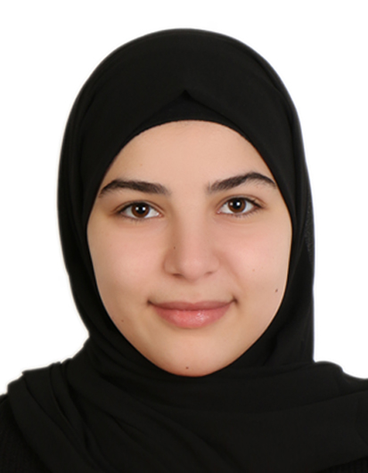

Linguagens de Programação
- Python
- Java
- Linguagem C
- HTML5
- CSS3
- JavaScript
- TypeScript

Estudante de Ciência da Computação
São Paulo, SP – Brasil
Telefone: +55 11 97528-1926
E-mail: haninatwi06@gmail.com
Estudante de Ciência da Computação na FIAP, com formação anterior na Lebanese American University. Possuo conhecimentos em desenvolvimento de software, programação orientada a objetos e desenvolvimento web utilizando Python, Flask, HTML, CSS, JavaScript e SQLite.
Desenvolvo projetos acadêmicos e pessoais aplicando lógica de programação, estruturas de dados e bancos de dados. Tenho perfil organizado e proativo, facilidade para trabalhar em equipe e forte interesse em desenvolvimento de software e aprendizado contínuo.
| Instituição | Curso | Período | Informações |
|---|---|---|---|
| FIAP | Bacharelado em Ciência da Computação | 2025 – Atual | Desenvolvimento de projetos em equipe, aplicação prática de lógica de programação e projetos acadêmicos envolvendo sistemas computacionais. |
| Lebanese American University | Ciência da Computação | 2024 – 2025 | Disciplinas: Java, Python, Cálculo III e Matemática Discreta. Bolsa acadêmica de 50%. |
Projeto Pessoal
Projeto full-stack desenvolvido com Flask para gerenciamento de tarefas pessoais.
Tecnologias: Python, Flask, HTML, CSS, JavaScript, SQLite, SQLAlchemy, Git e GitHub.
GitHub: Acessar projeto
Projeto Acadêmico em Equipe
Projeto desenvolvido em equipe com foco em tecnologia aplicada à saúde e bem-estar. Participação no planejamento da solução, organização das funcionalidades e desenvolvimento de propostas para melhorar a experiência e a acessibilidade dos usuários.
Projeto Acadêmico
Projeto desenvolvido em linguagem C utilizando structs, listas ligadas e simulação de telemetria para gerenciamento de rovers espaciais.
Projeto Acadêmico
Desenvolvimento de um sistema de monitoramento operacional para missões espaciais utilizando conceitos de programação, lógica digital e estruturas de dados.
Projeto Acadêmico
Criação e análise de bases de dados utilizando matrizes e conceitos matemáticos aplicados à computação.